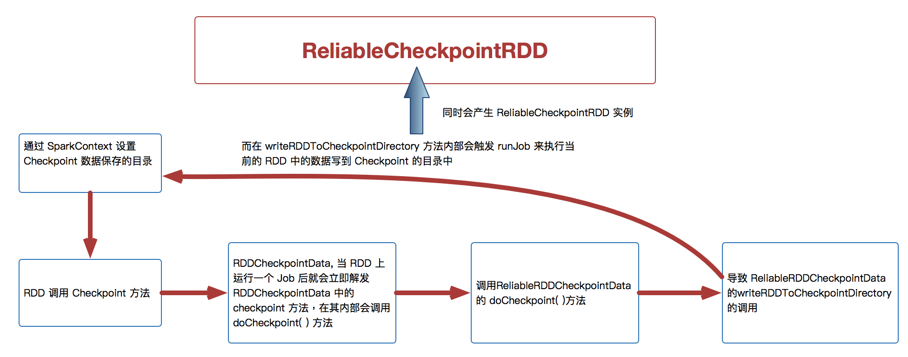

Ch08-Spark 之 Checkpoint
June 3, 2019
checkpoint 的机制保证了需要访问重复数据的应用 Spark 的 DAG 执行行图可能很庞大，task 中计算链可能会很长，这时如果 task 中途运行出错，那么 task 的整个需要重算非常耗时，因此，有必要将计算代价较大的 RDD checkpoint 一下，当下游 RDD 计算出错时，可以直接从 checkpoint 过的 RDD 那里读取数据继续算。
1. Checkpoint 介绍 #
checkpoint 在 spark 中主要有两处应用：
- 在 spark core 中对 RDD 做 checkpoint，可以切断做 checkpoint RDD 的依赖关系，将 RDD 数据保存到可靠存储（如 HDFS）以便数据恢复；
- spark streaming 中使用 checkpoint 用来保存 DStreamGraph 以及相关配置信息，以便在 Driver 崩溃重启的时候能够接着之前进度继续进行处理（如之前 waiting batch 的 job 会在重启后继续处理）。
2. Spark Core Checkpoint #
2.1 使用方法 #
sc.setCheckpointDir(checkpointDir.toString)
val rdd = sc.makeRDD(1 to 20, numSlices = 1)
rdd.checkpoint()
2.2 写入流程 #

- 对 RDD 调用了 checkpoint() 方法之后，它就接受 RDDCheckpointData 对象的管理。
- RDDCheckpointData 对象会负责将调用了 checkpoint() 方法的 RDD 的状态，设置为 MarkedForCheckpoint。
- 在 RDD 所在的那个 job 运行结束之后，会调用 job 中，最后一个 RDD 的 doCheckPoint() 方法，该方法沿着 finalRDD 的 lineage 向上查找，将标记为 MarkedForCheckpoint 的 RDD 的标记改为 CheckpointingInProgress。
- 然后启动一个单独的 job，来将 lineage 中，标记为 CheckpointingInProgress 的 RDD，进行 checkpoint 的操作，也就是将这个 RDD 中每个 parition 的数据依次写入到 checkpoint 目录（writePartitionToCheckpointFile），此外如果该 RDD 中的 partitioner 如果不为空，则也会将该对象序列化后存储到 Sparkcontext.setCheckpointDir() 方法设置的文件系统中。
2.3 读取流程 #
在做完 checkpoint 后，获取原来 RDD 的依赖以及 partitions 数据都将从 CheckpointRDD 中获取。也就是说获取原来 rdd 中每个 partition 数据以及 partitioner 等对象，都将转移到 CheckPointRDD 中。
在 CheckPointRDD 的一个具体实现 ReliableRDDCheckpintRDD 中的 compute 方法中可以看到，将会从 hdfs 的 checkpoint 目录中恢复之前写入的 partition 数据。而 partitioner 对象（如果有）也会从之前写入 hdfs 的 paritioner 对象恢复。
3. Spark Streaming Checkpoint #
3.1 使用方法 #
// Function to create and setup a new StreamingContext
def functionToCreateContext(): StreamingContext = {
val ssc = new StreamingContext(...) // new context
val lines = ssc.socketTextStream(...) // create DStreams
...
ssc.checkpoint(checkpointDirectory) // set checkpoint directory
ssc
}
// Get StreamingContext from checkpoint data or create a new one
val context = StreamingContext.getOrCreate(checkpointDirectory, functionToCreateContext _)
3.2 写入流程 #
在 spark streaming 中，jobGenerator 会定期生成任务（jobGenerator#generateJobs)。在任务生成后将会调用 doCheckpoint 方法对系统做 checkpoint。此外，在当前批次任务结束，清理 metadata 时，也会调用 doCheckpoint 方法。
checkpoint 的主要逻辑基本都在 JobGenerator#doCheckpoint 中，首先更新当前时间段需要做 checkpoint RDD 的相关信息（如 DirectKafkaInputDStream，将已经生成的 RDD 信息的时间，topic，partition，offset 等相关信息进行更新。）接着会通过 checkpointWriter 将 Checkpoint 对象写入到 checkpoint 目录中（CheckPoint#write -> CheckpointWriteHandle），这样就完成了 checkpoint 的写入。
3.3 读取流程 #
在 spark streaming 任务从 checkpoint 恢复 streamingContext 时，将会触发对之前保存的 checkpoint 对象的读取动作。在 StreamingContext 的 getOrCreate 方法中，通过 checkpoint#read 方法从 checkpoint 目录中恢复之前保存的 Checkpoint 对象。一旦该对象存在，将使用 Checkpoint 创建 streamingContext。于此同时，在 StreamingContext 中 DStreamGraph 的恢复借助之前保存的对象，并且调用 restoreCheckpointData 恢复之前生成而未计算的 RDD，从而接着之前的进度进行数据处理。
4. Checkpoint VS Persist #
persist 只是将数据保存在 BlockManager 中，但是 RDD 的 lineage(血缘关系，依赖关系) 是不变的。checkpoint 执行完之后，rdd 已经没有之前所谓的依赖 rdd 了，而只有一个强行为其设置的 checkpointRDD，checkpoint 之后 rdd 的 lineage 就改变了。
persist 的数据丢失的可能性更大，因为节点的故障会导致磁盘、内存的数据丢失。但是 checkpoint 的数据通常是保存在高可用的文件系统中，比如 HDFS 中，所以数据丢失可能性比较低。